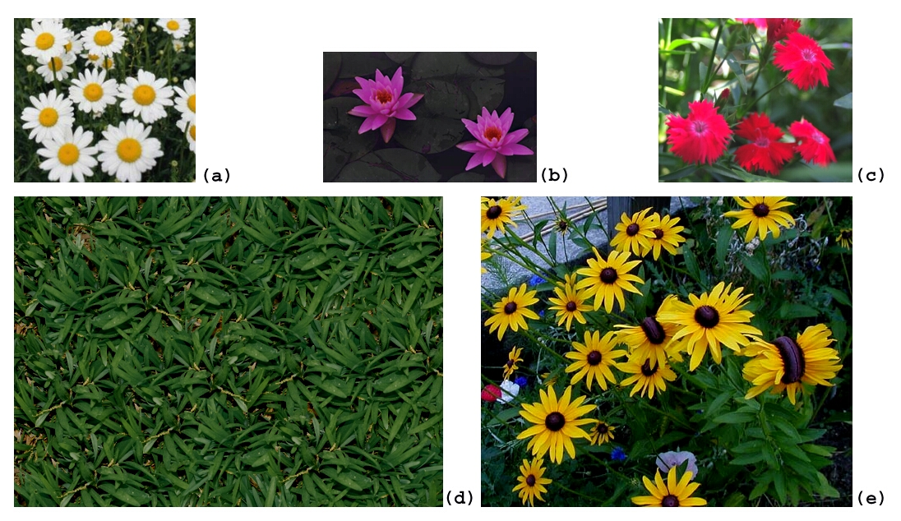
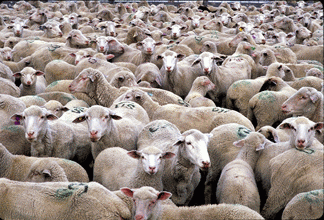
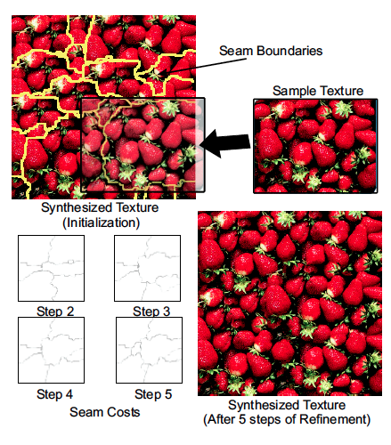
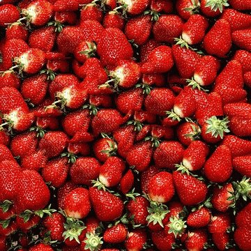
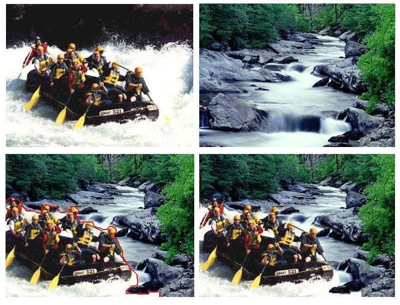
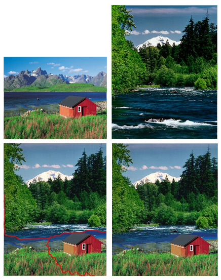
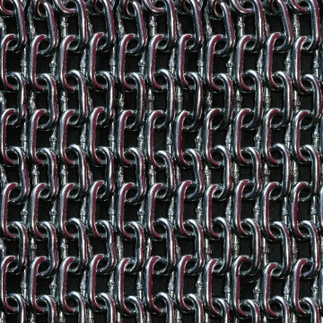

GraphCut Textures: Image and Video Synthesis Using Graph Cuts
an interpretation by mark breneman
GraphCut Textures: Image and Video Synthesis Using Graph Cuts
an interpretation by mark breneman
So What's This Paper all About?
So Whats This Paper All About?
This paper is about texture synthesis.
Texture synthesis is about creating larger textures(an infinite pattern)or images from smaller samples using...you guessed it...
MATH!
So Whats This Paper All About?
In this paper the authors layout an algorithm for texture synthesis of images and video.
The goal of this algorithm is to generate a new texture from input textures that is perceptually similar to the input texture.
So Whats This Paper All About?
Lets Break that down.Consider the following images;

What if we wanted to take the elements from these pictures and make something larger.
So Whats This Paper All About?
Something like this?
So Whats This Paper All About?
Or if what if we had a smaller image like this?

and wanted to make it bigger
Like this
This algorithm can do that.
Cool so how does it work?
So How Does It Work?
It uses a technique known as Graphcuts. Where a new texture is made by copying irregularly shaped patches from a sample image into an output image. In a two step process.
So How Does It Work?
Step 1
"Select a rectangular "candidate" patch by performing a comparison between the candidate, and the pixels already in the output image."
...Take a sample from the starting image; and compare it to the pixels in the image thats going to be created.
So How Does It Work?
Step 2
"Compute an optimal(irregularly shaped) portion of the candidate rectangle using the Graphcut technique and copy those pixels to the output image."
...In the candidate patch calculate an irregular shape, and copy that to the new image.
So How Does It Work?
It looks a little like this.
So How Does It Work?
At a detailed level the algorithm looks for seams in the overlap of the two images
and tries to find a seam which will have the "least cost"
So How Does It Work?
It also considers iteratively where seams might overlap after multiple placements
and takes that into account
So How Does It Work?
In a more visual sense it looks something like this

So How Does It Work?
In a more visual sense it looks something like this

Ok so what can it do?
What can it do?
In relative terms, it can do a lot of what the stamp tool and content aware fill do in Photoshop
What can it do?
Synthesize two images into one.

What can it do?
Synthesize two images into one.

What can it do?
Create Infinitely Repeatable Images

What can it do?
Create Infinitely Long Videos:That don't look like loops
Cool So How Could it Be Applied?
Potential Applications
As already discussed photo editing(Photoshop)
In a 3D model application this technique could be exploited and used as a glitch effect, or used to rebuild broken area.